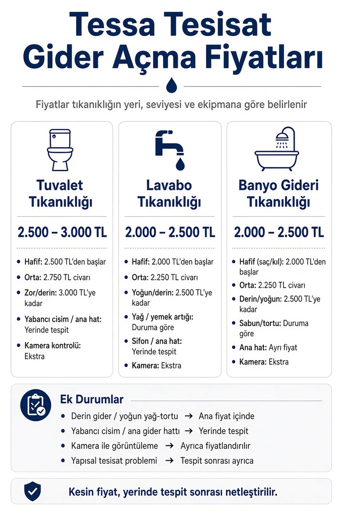

Tessa Tesisat'ta gider açma hizmetlerinde fiyatlandırma, tıkanıklığın bulunduğu bölgeye, tıkanıklığın seviyesine ve kullanılacak ekipmana göre belirlenmektedir. Aşağıdaki fiyatlar standart tıkanıklıklar için temel fiyat aralıklarını göstermektedir.
Tuvalet Tıkanıklığı
2.500 TL – 3.000 TL
Standart tuvalet gideri tıkanıklıklarının açılması için uygulanan fiyat aralığıdır.
Fiyatı değiştirebilecek durumlar
Hafif ve yüzeysel tıkanıklık: 2.500 TL'den başlayan fiyatlarla
Orta seviyeli tıkanıklık: 2.750 TL civarı
Zor ve derin tıkanıklık: 3.000 TL'ye kadar
Yabancı cisim kaynaklı tıkanıklık: Tıkanıklığın durumuna göre fiyatlandırılır
Ana gider hattı problemi: Yerinde tespit sonrası ayrıca fiyatlandırılır
Kamera ile gider kontrolü: İhtiyaç halinde ayrıca değerlendirilir
Kendi ekibimizin işbaşındaki kayıtları — stok görsel değil.
Yer süzgeci gideri açılırkenTıkalı yer süzgeci giderine spiral makine ve çelik yayla müdahaleMutfak lavabosu gideri açılırkenMutfak dolabının altındaki gider ağzından basınçlı hortumla çalışmaTıkalı giderden çıkan tortuGider borusu sökülüp hattaki tortulu suyun kovaya alınmasıBanyo giderinden çıkan saç kütlesiBanyo ve tuvalet giderinden çıkarılan saç ve tortu birikintisi
Fiyatı Belirleyen Ek Unsurlar
Bazı tıkanıklıklarda standart gider açma işleminin dışında ek işlem veya ekipman gerekebilir. Bu nedenle kesin fiyat, tıkanıklığın durumuna göre belirlenir.
Tıkanıklık ve gider açma işlemlerine göre fiyatlandırma
İşlem / Durum
Fiyatlandırma
Standart lavabo tıkanıklığı
2.000 – 2.500 TL
Standart banyo gideri tıkanıklığı
2.000 – 2.500 TL
Standart tuvalet tıkanıklığı
2.500 – 3.000 TL
Derin gider tıkanıklığı
Ana fiyat aralığı içinde / durumuna göre
Yoğun yağ ve tortu birikmesi
Ana fiyat aralığı içinde / durumuna göre
Yabancı cisim kaynaklı tıkanıklık
Yerinde tespit
Ana gider hattı tıkanıklığı
Yerinde tespit
Kamera ile tesisat görüntüleme
İhtiyaç halinde ayrıca fiyatlandırılır
Tesisat kaynaklı yapısal problem
Tespit sonrası ayrıca fiyatlandırılır

Tıkanıklık açma ve gider açma fiyat listemizin özeti. Rakamlar standart tıkanıklıklar içindir; kesin ücret yerinde tespitten sonra netleşir.
Fiyatlandırma Nasıl Yapılır?
Tessa Tesisat'ta fiyat belirlenirken öncelikle tıkanıklığın hangi giderde olduğu, ne kadar ileride bulunduğu, tıkanıklığa neden olan madde ve kullanılacak müdahale yöntemi değerlendirilir.
Standart tıkanıklıklarda fiyatlar yukarıdaki aralıklar içerisindedir. Daha kapsamlı bir işlem gerektiğinde, yapılacak ek işlem ve varsa ekipman kullanımı müşteriye belirtilerek fiyatlandırma yapılır.
Tıkanıklık Açma Ücreti Neye Göre Değişiyor?
Aynı işe iki farklı ücret çıkmasının sebebi keyfîlik değil; giderin kendisi. Fiyatı yukarı ya da aşağı çeken şeyler pratikte şunlar:
Tıkanıklığın yeri: Sifonun hemen altındaki bir tıkaçla, kolona bağlanan noktadaki tıkaç aynı iş değil. Hat uzadıkça makine değişiyor, süre uzuyor.
Tıkanıklığın cinsi: Saç ve sabun tortusu mekanik olarak kolay çıkar. Donmuş yağ, kireç kabuğu, inşaat harcı veya kök sarması aynı kolaylıkta çıkmaz.
Kullanılan ekipman: Elde açılan bir gider ile çelik yaylı robot makine ya da yüksek basınçlı yıkama gereken bir hat arasında fark var.
Erişim noktası: Temizleme kapağı açıktaysa iş kısa sürer. Kapak yoksa, dolabın içinden ya da rögardan çalışmak gerekiyorsa süre uzar.
Daire içi mi, bina hattı mı: Fiyatı en çok değiştiren ayrım bu. Aşağıda ayrı başlık altında anlattık.
Telefonda Neden Kesin Rakam Söylemiyoruz?
Söyleyebilseydik söylerdik. Ama telefonda duyduğumuz şey çoğu zaman “lavabo gitmiyor” oluyor; giderin içinde ne olduğunu ne siz görüyorsunuz ne biz. Sahada aynı cümleyle gittiğimiz iki adresten birinde iş on beş dakikada bitiyor, diğerinde kolonda kireç kabuğu çıkıyor.
Bu yüzden telefonda size aralık söylüyoruz: yukarıdaki tablo, standart bir işin hangi bandın içinde kalacağını baştan gösteriyor. Ekip yerinde gördükten sonra, işe başlamadan önce net rakamı söylüyor. Onaylamazsanız iş yapılmıyor.
Şuna dikkat edin: telefonda tereddütsüz “çok ucuz” bir rakam veren kimse o rakamı görmüyor. Kapıya gelince “bu başka iş” denip fiyat katlanıyor. Biz de kapıda sürpriz sevmediğimiz için aralığı buraya, herkesin görebileceği bir sayfaya yazdık.
Gider Açma Ücretinde Nelere Dikkat Etmelisiniz?
Fiyat işe başlamadan konuşulsun: Makine gidere girdikten sonra pazarlık yapılmaz. Net rakamı duymadan onay vermeyin — bu bizim için de geçerli.
Neyin dahil olduğu net olsun: Açma işlemi mi, kamerayla kontrol mü, ikisi birden mi? Kamera her işte gerekmiyor; gerekmediği yerde ücret de çıkmamalı.
Kırma konusu baştan sorulsun: Standart bir tıkanıklıkta fayans kırılması gerekmiyor. Kırma teklif eden biri varsa önce sebebini kamerayla göstermesini isteyin.
Tekrarlayan tıkanıklıkta ısrar etmeyin: Aynı gider kısa aralıklarla tekrar tıkanıyorsa sorun tıkaçta değil hattın kendisinde. Üst üste açtırmak, bir kez doğru teşhisten pahalıya geliyor.
Daire İçi Tıkanıklık mı, Bina Ana Gideri mi?
Fiyatı en çok değiştiren ayrım bu. Tek bir gider yavaşladıysa iş büyük ihtimalle o giderin kendi hattında; yukarıdaki standart aralıklar geçerli. Evdeki birkaç gider aynı anda taşıyorsa ya da alt kattaki komşuda da aynı sorun varsa bina kolonundan şüpheleniyoruz; orası ayrı bir iş ve yerinde görülmeden fiyatlanmıyor.
Bina hattı söz konusuysa masrafın ortak alana mı daireye mi ait olduğu da ayrı bir konu. Sokaktaki ana kanalizasyon şebekesi ise zaten İSKİ'nin işi — parsel içi ile sokak arasındaki sınırı ilçe sayfalarımızda tablo hâlinde anlattık.
Kamera Her İşte Gerekiyor mu?
Hayır. Standart bir lavabo ya da banyo gideri tıkanıklığında kamera gerekmiyor; iş açılır, biter. Kamerayı şu üç durumda öneriyoruz: aynı gider kısa sürede tekrar tıkanıyorsa, tıkanıklık makineyle açılmıyorsa, ya da hattın çökmüş/kırılmış olduğundan şüpheleniyorsak.
Kamera gerekmeyen bir işte kamera ücreti çıkarmıyoruz. Gerektiğinde de neden gerektiğini ekranda birlikte görüyorsunuz.
Fiyatlar İlçeye Göre Değişiyor mu?
Hayır. Yukarıdaki aralıklar İstanbul'un 39 ilçesinin tamamında aynı. Adres uzak diye fiyat yükseltmiyoruz; ekip hangi ilçeye giderse gitsin standart iş standart bandın içinde kalıyor.
Ev Yöntemlerini Denemek Ücreti Düşürür mü?
Gider sadece yavaşladıysa denemeye değer — bazı yöntemlerin gerçekten bir etkisi var ve iş bize hiç düşmeyebilir. Ama su hiç gitmiyorsa ya da geri geliyorsa tıkaç oturmuş demektir; o aşamada dökülen kimyasal tıkanıklığı çıkarmıyor, sadece hattın içinde bekliyor ve biz geldiğimizde işi zorlaştırıyor.
Ücret ödemeden önce denemek isterseniz, hangi ev yönteminin gerçekten işe yaradığını lavabo ve gider açma yöntemleri rehberimizde tesisatçı gözünden yazdık.
Not: Fiyatlar hizmetin kapsamına ve tıkanıklığın durumuna göre değişebilir. Kesin ücret, gerekli müdahale belirlendikten sonra netleştirilir.
Yukarıdaki fiyat aralıkları İstanbul'un 39 ilçesinin tamamında aynı. Bulunduğunuz ilçenin sayfasında o bölgedeki yapı stoğunu, hattın karakterini ve en sık karşılaştığımız tıkanma sebebini ayrıca anlattık.
Standart işlerde lavabo ve banyo gideri tıkanıklığı 2.000 TL – 2.500 TL, tuvalet tıkanıklığı 2.500 TL – 3.000 TL bandında. Bunlar standart tıkanıklıklar için temel aralıklar; kesin ücret, tıkanıklığın yeri ve cinsi görüldükten sonra netleşiyor.
Gider açma ücreti neye göre belirleniyor?
Tıkanıklığın hangi giderde olduğu, hattın ne kadar ilerisinde bulunduğu, tıkanıklığa neden olan madde ve kullanılacak müdahale yöntemi belirliyor. Daire içi bir gider ile bina ana kolonu aynı iş değil; ikincisi yerinde görülmeden fiyatlanmıyor.
Tuvalet tıkanıklığı açma ne kadar?
2.500 TL – 3.000 TL. Hafif ve yüzeysel tıkanıklıklar bandın alt ucundan başlıyor, zor ve derin tıkanıklıklarda üst uca çıkıyor. Yabancı cisim varsa ya da sorun ana gider hattındaysa durum yerinde değerlendiriliyor.
Lavabo ve banyo gideri açma ücreti ne kadar?
İkisi de 2.000 TL – 2.500 TL bandında. Lavaboda yağ ve yemek artığı, banyoda saç ve sabun tortusu baskın sebep; tıkanıklığın yoğunluğu arttıkça fiyat bandın üst ucuna yaklaşıyor.
Telefonda kesin fiyat öğrenebilir miyim?
Telefonda size aralığı söylüyoruz. Giderin içinde ne olduğunu ne siz görüyorsunuz ne biz; bu yüzden net rakamı ekip yerinde gördükten sonra, işe başlamadan önce söylüyor. Onaylamazsanız iş yapılmıyor.
Fiyata kameralı kontrol dahil mi?
Standart bir lavabo veya banyo gideri tıkanıklığında kamera gerekmiyor ve ücreti de çıkmıyor. Kamerayı aynı gider tekrar tıkanıyorsa, makineyle açılmıyorsa ya da hattın çökmüş olmasından şüpheleniyorsak öneriyoruz; o durumda ayrıca değerlendiriliyor.
Fiyatlar İstanbul'un her ilçesinde aynı mı?
Evet. Yukarıdaki aralıklar 39 ilçenin tamamında geçerli; adres uzak diye fiyat yükseltmiyoruz.
Fayans veya seramik kırılırsa ek ücret çıkar mı?
Standart bir tıkanıklıkta kırma gerekmiyor; çalışma mevcut giriş noktalarından yapılıyor. Boruda çökme veya kırık varsa önce kamerayla tam noktayı gösteriyor, ne yapılacağını ve ücretini anlatıp onayınızı almadan hiçbir yere dokunmuyoruz.
Net fiyatı telefonda konuşalım
Giderin durumunu birkaç soruyla birlikte anlayalım, ekip doğru makineyle yola çıksın.